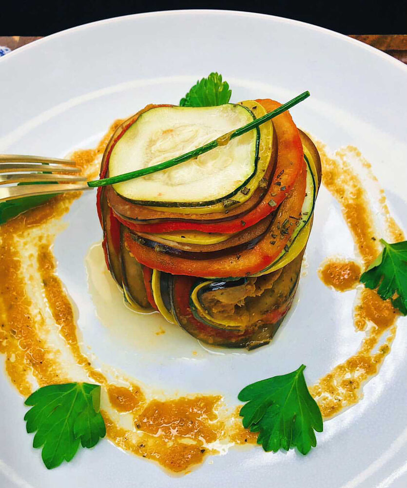

Ratatouille

Description
The meal made famous by the Pixar movie of the same name. A perfect choice for any vegetarians and vegans.
Ingredients
- 1 1/2 red bell peppers
- 2 tablespoons extra virgin olive oil, divided
- 2 cloves minced garlic
- 1/2 cup finely diced onion
- 14 oz canned tomatoes
- 1 sprig thyme
- 1 sprig flat-leaf parsley
- 1 small bay leaf
- 1 zucchini (4 to 5 ounces) sliced into 1/16th inch rounds
- 1 Japanese eggplant (4 to 5 ounces) sliced into 1/16th inch rounds
- 1 yellow squash (4 to 5 ounces) sliced into 1/16th inch rounds
- 3 tomatoes on the vine, sliced into 1/16th inch rounds
- 1 teaspoon balsamic vinegar
- Chives
- Kosher salt and freshly ground black pepper
Cooking Instructions
- Place stemmed and seeded pepper halves onto sheet of aluminum foil, skin side up. Spritz with olive oil.
- Set broiler to high then broil pepper halves for 5-10 minutes.
- Add peppers to bowl and cover tightly with aluminum foil, allowing them to steam for another 10 minutes. Peel skins.
- In a saucepan, caramelize onions in the remaining olive oil for about 10 minutes on medium low heat.
- Add garlic to onions and sautee for about 1 more minute. Sqaush tomatoes and add in next, juices included.
- Chop peppers and add to pot, followed by thyme, parsley, and bay leaf. Season with salt and bring to a simmer.
- Continue to simmer over low heat for about 10 minutes. Ingredients should be very soft with little liquid left.
- Remove herbs and puree ingredients. Set 1/2 cup of mixture aside and spread remainder in the bottom of a 9 inch pie plate.
- Lay out sliced vegetables on paper towels for about 10 minutes. Pat dry to prevent sogginess while cooking.
- Arrange vegetable slices with 1/4 inch showing in concentric circles over sauce, alternating between each vegetable.
- Mix garlic, oil, and thyme leaves in a bowl and season with salt and pepper to taste. Brush on the surface of vegetables.
- Cover tightly with aluminum foil and bake in over preheated to 275 degrees. Cook for about 2 hours.
- Uncover and bake an additonal 30 minutes to steam off excess liquid.
- Serve with 2 tablespoons of reserve puree with oil, vinegar, and salt/pepper. Drizzle in a circle around plate.
- Arrange vegetables vertically as pictured above, with another layer set on top. Top with a sliced chive and enjoy!
Return to main page